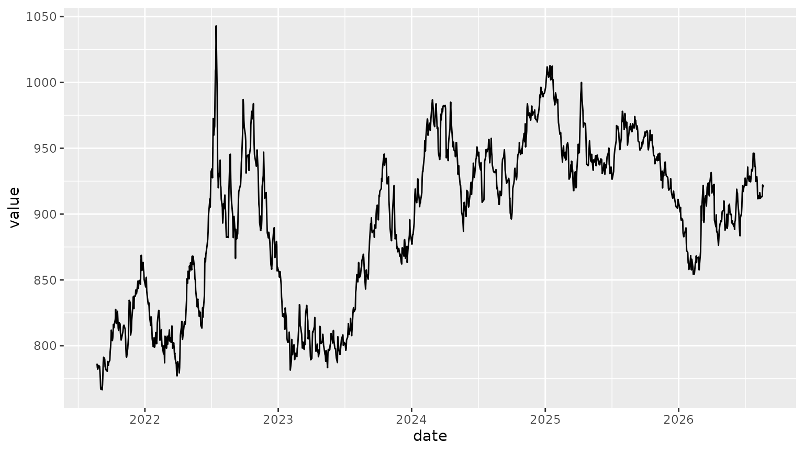
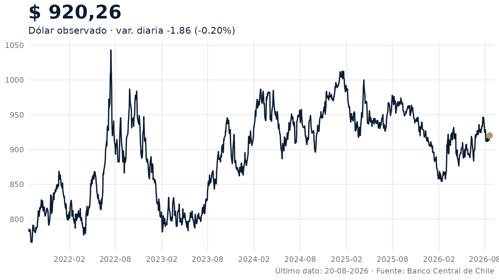

bcchr devuelve tibbles normales. Esa decisión permite
usar la serie directamente con ggplot2, sin clases
especiales ni métodos de gráfico obligatorios.
Los ejemplos de esta página consultan la API del Banco Central y
requieren que BCCH_TOKEN esté configurado. Si no existe el
token, el código se muestra pero no se ejecuta al construir la
vignette.
Descargar una serie
Usaremos el dólar observado y una ventana de cinco años. El código de
la serie es exacto; cuando no lo conozca puede encontrar candidatos con
resolve_series().
library(bcchr)
# Requiere BCCH_TOKEN configurado.
dolar <- get_series(
"F073.TCO.PRE.Z.D",
from = Sys.Date() - 365 * 5,
to = Sys.Date()
)
dolar <- dolar[
dolar$status_code == "OK" & !is.na(dolar$value),
c("date", "value")
]
tail(dolar)
#> # A tibble: 6 × 2
#> date value
#> <date> <dbl>
#> 1 2026-08-13 912
#> 2 2026-08-14 913.
#> 3 2026-08-17 913.
#> 4 2026-08-18 914.
#> 5 2026-08-19 922.
#> 6 2026-08-20 920.La opción rápida
plot_series() sirve para una inspección inmediata. Es
deliberadamente pequeño: recibe la salida de get_series() y
devuelve un objeto ggplot.
plot_series(dolar)
Personalizar el gráfico
El antiguo dashboard de indicadores financieros usaba una idea simple
y útil: mostrar historia reciente, destacar el último valor y
acompañarlo con la variación y la fecha del último dato. Podemos
conservar esa lógica con un ggplot estático y muy poco
código.
last <- tail(dolar, 1)
last_two <- tail(dolar$value, 2)
change <- diff(last_two)
change_pct <- change / last_two[1]
last_value <- formatC(
last$value,
format = "f",
digits = 2,
big.mark = ".",
decimal.mark = ","
)
subtitle <- sprintf(
"Dólar observado · var. diaria %+.2f (%+.2f%%)",
change,
100 * change_pct
)
ggplot2::ggplot(dolar, ggplot2::aes(date, value)) +
ggplot2::geom_line(
linewidth = 0.7,
colour = "#0c1c32"
) +
ggplot2::geom_point(
data = last,
size = 2.8,
colour = "#b69b68"
) +
ggplot2::scale_x_date(
date_breaks = "6 months",
date_labels = "%Y-%m",
expand = ggplot2::expansion(mult = c(0, 0.01))
) +
ggplot2::labs(
title = paste("$", last_value),
subtitle = subtitle,
x = NULL,
y = NULL,
caption = paste(
"Último dato:", format(last$date, "%d-%m-%Y"),
"· Fuente: Banco Central de Chile"
)
) +
ggplot2::theme_minimal(base_family = "sans") +
ggplot2::theme(
panel.grid.minor = ggplot2::element_blank(),
plot.title = ggplot2::element_text(
size = 22,
face = "bold",
colour = "#0c1c32"
),
plot.subtitle = ggplot2::element_text(colour = "#0c1c32"),
plot.caption = ggplot2::element_text(colour = "#666666"),
axis.text = ggplot2::element_text(colour = "#666666")
)
La paleta usa el navy y el dorado del sitio de bcchr,
pero los datos siguen siendo un tibble común. Para otro indicador basta
cambiar el series_id y, si corresponde, adaptar el formato
del eje o del último valor.